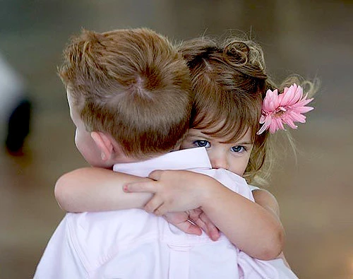

Den svære aflevering
Når afleveringen er svær
Hvad gør man, når afleveringen af sit barn er svær? Når ens barn græder og ikke vil give slip, kan det føles som en kniv i hjertet at gå sin vej. Alt inden i en skriger, for at blive at trøste sit grædende barn. Men hvordan reagerer man bedst overfor sit barn og overfor de ansatte i den situation?

Vidste du at?...
Børn på 4 år stiller i gennemsnit 400 spørgsmål om dagen.
Babyer kan genkende musik, som de har hørt imens de lå inde i maven.
Nyfødte babyer tisser hvert 20. minut.
Et barn i 0-6 års alderen lærer i gennemsnit ca. 5 nye ord hver dag
Børnehavealderen
Det er en god idé at forberede sit barn på, hvad der venter dem, når de ankommer til institutionen. At stille dem spørgsmål som "hvem skal du lege med i dag?" eller "hvad kunne du godt tænke dig at lege med"? Det får barnets hjerne i gang, og de kan begynde forberede sig på dagen. Overgangen kan også blive nemmere, hvis barnet ved, hvem der henter dem igen om eftermiddagen. Børn har brug for at vide hvad der venter dem, og det giver dem en tryghedsfølelse at vide, at de bliver hentet igen.
Et barn i institutionsalderen kan ikke altid genfortælle, hvad der er sket i løbet af en dag, men at du som forældre har været i dialog med en ansat gør, at du kan starte dialogen mellem dig og dit barn. En god forældrekontakt omhandler ikke kun forældrekontakt til pædagogerne. Det, at have et godt forhold til pædagogmedhjælperne er også vigtigt, da det oftest er pædagogmedhjælperne, der kan svare bedst på dagligdagsspørgsmålene, som fx hvordan dit barns dag har været.
Se også:
Vuggestuealderen
Når det kommer til helt små børn i vuggestuealderen, foregår kommunikationen mellem barn og voksen meget gennem ansigtsudtryk og kropssprog. Det er begrænset hvad de forstår af ord, og derfor spejler de sig meget gennem det, de kan se. Ser et lille barn en sur voksen med voldsomme armbevægelser, bliver det lille barn bange og utrygt, hvorimod hvis de ser en voksen med et stort smil og rolige armbevægelser, smitter det lettere af på barnet.
Når det kommer til en svær aflevering, er det derfor vigtigt, at forblive rolig og glad. Selvom det skær i hjertet, når ens barn græder, og man for alt i verden har lyst til at trøste sit barn, er det vigtigt at stole på, at de voksne er der af én grund - at passe på dit barn, når du ikke selv kan. Det kan virke naturligt, at tage dit barn tilbage i favnen, efter at have afleveret det i armene på en voksen, men det gør kun dit barn endnu mere forvirret over, hvad der skal ske. Hvis du virker urolig over, at dit barn er ked af det, og har et usikkert ansigtsudtryk og et uroligt toneleje, smitter det af på sit barn. Forbliver du derimod glad og smilende og har en optimistisk toneleje, har dit barn lettere ved, at komme ud af gråden.